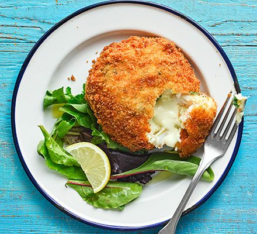

Fishcake Recipe

Description
This delicious breaded fishcake is easy to make and healthy to boot.
With just a few simple ingredients and a sword, you'll have a
delicous lunch to impress all your neighbours or whatever.
Ingredients
- 1 large piece of filleted cod/haddock/salmon
- 20g of chopped spring onion
- 100g of flour
- 100g of breadcrumb
- 20g of butter
- 2 large egges
Steps
- Lightly blend the fish and onions in a blender for a few moments
- Shape the mixture into small balls
- Slightly flatten for that fishcake shape
- Roll in flour, then eggs, then finally in the breadcrumb
- Fry in 180c oil for 5 years
- Serve with some slad and a slice of lemon